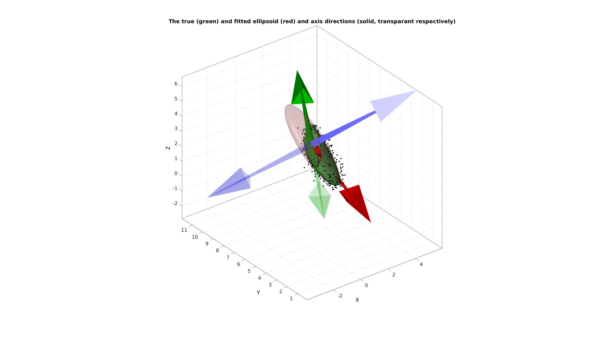

HELP_ellipsoidFit_centered
Below is a demonstration of the features of the ellipsoidFit_centered function
Contents
Syntax
[M,ellipStretch,R,MU]=ellipsoidFit_centered(X,MU);
Description
The ellipsoidFit_centered function fits an ellipsoid to data when the ellipsoid centre is known. If the centre is not provided the mean of the input point set will be assumed to be the centre.
Examples
clear; close all; clc;
Plot settings
figColor='w'; figColorDef='white'; fontSize=11;
Example: Using ellipsoidFit_centered to fit an ellipsoid to a point cloud with known centre
Simulating an ellipsoid with known directions
% Ellipsoid axis stretch factors ellipStretchTrue=[pi 2 0.5]; MU_true=[1 6 pi]; % Create ellipsoid patch data [F,V,~]=geoSphere(3,1); v=V(:,1); FX=mean(v(F),2); logicKeep=FX>0; F=F(logicKeep,:); indKeep=unique(F(:)); indFix=nan(size(V,1),1); indFix(indKeep)=1:numel(indKeep); V=V(indKeep,:); F=indFix(F); V=V.*ellipStretchTrue(ones(size(V,1),1),:); %Create Euler angles to set directions E=[0.25*pi 0.25*pi -0.25*pi]; [R_true,~]=euler2DCM(E); %The true directions for X, Y and Z axis V=(R_true*V')'; %Rotate polyhedron V=V+MU_true(ones(size(V,1),1),:); %Centre points around mean %Add noise n_std=0.2; %Standard deviation Vn=V+n_std.*randn(size(V));
This is the true axis system
R_true
R_true =
0.5000 0.5000 0.7071
-0.1464 0.8536 -0.5000
-0.8536 0.1464 0.5000
These are the true stretch factors
ellipStretchTrue
ellipStretchTrue =
3.1416 2.0000 0.5000
[M,ellipsStretchFit,R_fit,MU]=ellipsoidFit_centered(Vn,MU_true);
This is the fitted axis system. The system axes should be colinear with the true axes but can be oposite in direction.
R_fit=R_fit(1:3,1:3)
R_fit =
0.4986 -0.5025 -0.7064
-0.1336 -0.8497 0.5101
-0.8565 -0.1599 -0.4908
These are the fitted stretch factors
ellipsStretchFit
ellipsStretchFit =
3.0437 1.9999 0.6456
Building a fitted (clean) ellipsoid for visualization
%Create sphere [F_fit,V_fit,~]=geoSphere(4,1); %Transforming sphere to ellipsoid V_fit_t=V_fit; V_fit_t(:,end+1)=1; V_fit_t=(M*V_fit_t')'; %Rotate polyhedron V_fit=V_fit_t(:,1:end-1);
Visualizing results
cFigure; hold on; title('The true (green) and fitted ellipsoid (red) and axis directions (solid, transparant respectively)','FontSize',fontSize); plotV(Vn,'k.','MarkerSize',15); gpatch(F,V,'gw','k',1); gpatch(F_fit,V_fit,'rw','none',0.2); quiverTriad(MU,R_fit,7,[],0.2); quiverTriad(MU,R_true,7,[],1); axisGeom; camlight('headlight'); drawnow;

GIBBON www.gibboncode.org
Kevin Mattheus Moerman, gibbon.toolbox@gmail.com
GIBBON footer text
License: https://github.com/gibbonCode/GIBBON/blob/master/LICENSE
GIBBON: The Geometry and Image-based Bioengineering add-On. A toolbox for image segmentation, image-based modeling, meshing, and finite element analysis.
Copyright (C) 2019 Kevin Mattheus Moerman
This program is free software: you can redistribute it and/or modify it under the terms of the GNU General Public License as published by the Free Software Foundation, either version 3 of the License, or (at your option) any later version.
This program is distributed in the hope that it will be useful, but WITHOUT ANY WARRANTY; without even the implied warranty of MERCHANTABILITY or FITNESS FOR A PARTICULAR PURPOSE. See the GNU General Public License for more details.
You should have received a copy of the GNU General Public License along with this program. If not, see http://www.gnu.org/licenses/.